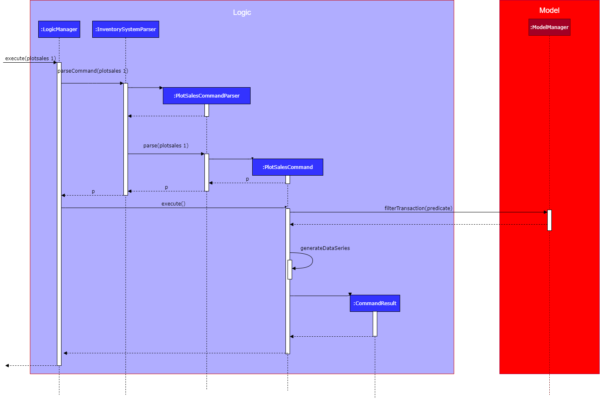

Overview
iTrack Pro is for the grocery shop owners to keep track of the products, customers, and transactions of the shop and have a better understanding of the business by viewing the performance of products and behaviors of customers.
Summary of contributions
-
Major enhancement:
-
Added the ability to manage transcations, e.g., addt, editt, findt, listt, undot, cleart.
-
What it does: It records, edits, lists, finds, deletes transactions from the system. The quantity and sales attribute of products will be affected as well.
-
Justification: This feature allows the customer to manage a large amount of transactions. It improves the usability of the application and increases the efficiency for the user to manage inventory system.
-
Highlights: Adding/editting/undoing transactions will also update the quantity/sales attributes of related products. A future date time in the future is not allowed.
-
Credits: These operations are inspired from the operations of persons in AB3 system.
-
-
Added the ability to plot the quantity sold of a product in a certain time range.
-
What it does: The command fetches all transactions related with the specified product in a certain time period, then converts the data to daily time series format and plot it in a bar chart.
-
Justification: This feature allows users to understand the popularity of a product visually in a trend format, such that they could make decisions of whether to stock up or down the product.
-
Highlights: If a time range is not specified, the command will consider the last 7 days by default. An end date before start date or date in the future is not allowed.
-
-
Added the histogram of products to the statistics panel.
-
What is does: It fetches the quantity and sales of all the products and group them by the amount of quantity/sales. The data is then plot in a line chart format.
-
Justification: It allows the user to understand whether the business is healthy, E.g. whether most of the products have sufficient inventory, is there any super-sales-creator or all the products share the same sales evenly.
-
Highlights: They are displayed upon the application is launched. The graph will be updated everytime a user takes any action, e.g. adding a new product.
-
-
-
Minor enhancement:
-
Update the UI from three side-by-side lists to tab panes with transactions representated by rows in a table (Pull request #186).
-
Split the original shared quantity class to TransactionQuantity and ProductQuantity with different minimal values. Merged sales and money class (Pull request #117, #192).
-
Set default dateTime and money for transactions (Pull request #117).
-
Added test for transaction model, logic, and test utils (PR #209, #201, #197, #183, #140).
-
-
Code contributed: tp-dashboard
-
Other contributions:
-
Project management:
-
Set up the issue labels and milestones with my team mates.
-
Set up
netlify,coverall, auto-build tools (Pull request #17) -
Merge PRs created by my team mates.
-
-
Enhancements to existing features:
-
Refactored the process of triggering notification windows as passing signals to command result and making the
MainWindowto handle the plot. (Commit 803fa01 of PR #192) -
Refactored the process of checking duplicate input attributes (this commit from PR #209)
-
Fixed the bug of re-listing all products everytime adding a transaction, allowing users to input future time, and statistics window not updated after each action (PR #182, #197, #134, #186)
-
-
Documentation:
-
Updated the readme from the template of AB3 to customized iTrackPro page (PR #12)
-
Updated the UG with add/edit/delete/find/list transactions as well as top-selling product, revenue, and low inventory (Pull request #27)
-
Updated the UG about the plotsales command, renaming
deletettoundot, re-phrase some explanations (Pull request #135, Pull request #137, #212) -
Updated the Dev Guide with NFR, Glossary, managing transaction and plot sales command. (PR #21, #109, #107, #212)
-
-
Community:
-
Contributions to the User Guide
Given below are sections I contributed to the User Guide. They showcase my ability to write documentation targeting end-users. |
Viewing help : help
Format: help
View the user guide page in a pop-out window.
Adding a transaction : addt
Adds a specified transaction to the system.
Format: addt p/PRODUCT_ID c/CUSTOMER_ID q/QUANTITY [dt/DATETIME] [m/MONEY] [d/DESCRIPTION]
|
The date time field [dt/] is optional, and will be recorded as current local machine time if left empty. The money field [m/] is optional, and will be recorded as product price multiplied by quantity if left empty. Only need to enter if necessary (i.e. discounts on products). The description field [d/] is optional, will be recorded as N/A if left empty. Only need to enter if user wants to add notes to the transaction. |
| Adding transaction will update the quantity and sales of its associated product as well. |
After adding transactions, the transaction list can be viewed under the transaction tab.
Examples:
-
addt p/1 c/10 dt/2020-02-19 19:00 q/10 m/20
Adds a transaction, where the 10th customer bought 10 of the 1st product for $20 at 2020-02-19 19:00. -
addt p/20 c/2 dt/2020-02-20 10:00 q/10 m/30 d/under discount
Adds a transaction, where the 2nd customer bought 10 of the 20th product for $30 at 2020-02-20 10:00 at an discount.
Listing all transactions : listt
Lists all the transactions.
Format: listt
Editing a transaction : editt
Edits a transaction in the system. It allows the user to edit wrong transction
with correct information.
Format: editt INDEX [p/PRODUCT_ID] [c/CUSTOMER_ID] [dt/DATE_TIME] [q/QUANTITY] [m/MONEY] [d/DESCRIPTION]
| Editting the quantity or money of a transaction will update the quantity and sales of its associated product as well. |
Examples:
-
editt 1 p/101 c/123
Edits the product id and customer id of the 1st transaction to be 101 and 123 respectively.
Finding transactions : findt
Finds transactions whose attributes match the given attributes.
Format: findt [p/PRODUCT_NAME [PRODUCT_NAME]…] [c/CUSTOMER_NAME [CUSTOMER_NAME]…] [dt/DATE_TIME] [m/MONEY]

| Only product name and customer name support multiple keywords |
Examples:
-
findt p/iphone
Returns all transactions that involve the productiphone. -
findt c/bob angie
Returns all transactions that involve a customer named Bob OR a customer named Angie. -
findt dt/2020-02-07 16:00
Returns all transactions made on 7th February 2020 4pm. -
findt m/100
Returns all transactions that have an amount of 100 dollars. -
findt c/bob dt/2020-02-07 16:00
Returns all transactions that Bob made on the 7th February 2020 4pm.
Clearing all transactions : cleart
Clears all transactions from the list of transactions.
Format: cleart
| Permanently deletes all the stored transaction data in the application. |
Command Summary
-
Adding customer :
addc n/NAME p/PHONE_NUMBER [e/EMAIL] [a/ADDRESS] [t/TAG]…
e.g.addc n/John Doe p/98765432 e/johnd@example.com a/John street, block 123, #01-01 -
Listing all customers :
listc -
Editing customer information :
editc INDEX [n/NAME] [p/PHONE] [e/EMAIL] [a/ADDRESS] [t/TAG]…
e.g.editc 1 p/91234567 e/johndoe@example.com -
Finding customers :
findc [n/NAME [NAME]…] [p/PHONE] [e/EMAIL] [a/ADDRESS [ADDRESS]…]
e.g.findc n/John -
Deleting a customer :
deletec INDEX
e.g.findc n/Betsy
deletec 1 -
Clearing all customers :
clearc -
Adding a product :
addp d/DESCRIPTION pr/PRICE q/QUANTITY cp/COSTPRICE [s/SALES]
e.g.addp d/iphone x pr/1000 cp/800 q/10 -
Listing all products :
listp -
Editing a product :
editp INDEX [d/DESCRIPTION] [pr/PRICE] [cp/COSTPRICE] [q/QUANTITY] [s/SALES]
e.g.editp 1 pr/1150 q/80 -
Finding products :
findp KEYWORD [KEYWORD]…
e.g.findp black -
Deleting a product :
deletep INDEX
e.g.listp
deletep 2 -
Clearing all products :
clearp -
Adding a transaction :
addt p/PRODUCT_ID c/CUSTOMER_ID dt/DATE_TIME m/MONEY q/QUANTITY [d/DESCRIPTION]
e.g.addt p/20 c/2 dt/2020-02-20 10:00 m/30 q/10 d/under discount -
Listing all transactions :
listt -
Editing a transaction :
editt INDEX [p/PRODUCT_ID] [c/CUSTOMER_ID] [dt/DATE_TIME] [q/QUANTITY] [m/MONEY] [d/DESCRIPTION]
e.g.editt 1 p/101 c/123 -
Finding transactions :
findt [p/PRODUCT_NAME [PRODUCT_NAME]…] [c/CUSTOMER_NAME [CUSTOMER_NAME]…] [dt/DATE_TIME] [m/MONEY]
e.g.findt c/bob dt/2020-02-07 10:00 -
Undo a transaction :
undot INDEX
e.g.findt dt/2020-01-03 10:00
undot 1 -
Clearing all transactions :
cleart -
Get the revenue made in a certain period :
revenue sd/START_DATE ed/END_DATE
e.g.revenue sd/2020-01-01 10:00 ed/2020-12-12 10:01 -
Get the profit made in a certain period :
profit sd/START_DATE ed/END_DATE
e.g.profit sd/2020-01-01 10:00 ed/2020-12-12 10:01 -
Setting the low-inventory threshold :
lowlimit p/PRODUCT_ID t/THRESHOLD
e.g.lowlimit p/1 t/20 -
Predicting the sales for the next month :
predict -
Plotting sales :
plotsales PRODUCT_INDEX [sd/START_DATE] [ed/END_DATE]
e.g.plotsales 1 sd/2020-03-20 10:00 ed/2020-03-30 10:00 -
Exiting from the program :
exit -
Get help :
help
Contributions to the Developer Guide
Given below are sections I contributed to the Developer Guide. They showcase my ability to write technical documentation and the technical depth of my contributions to the project. |
Add/edit/undo/list/find transactions
The user input is handled by the MainWindow class in Ui first, then passed to the LogicManager and parsed into
AddTransactionCommand, EditTransactionCommand, etc. Depending on the nature of each command, new transaction or
updated transaction will be added to a new index or existing index of the UniqueTransactionList, hosted by the
InventorySystem class. For the deleteTransactionCommand, a transaction will be dropped from the internalList.
Since the quantity and sales attribute will affect the same attributes of a product, the affiliated product will
also be edited. In the end, the filteredTransactionList of the system will be updated so that the user can view the change
accordingly. For the list and find transction commands, the filteredTransactionList will be updated for the UI to interact with users.
One command is implemented for each operations in the logic module:
-
AddTransactionCommand— Adds a transaction into the system and update the the quantity and sales attribute of the corresponding product. -
EditTransactionCommand— Edit details of a transaction. Ifquantityis changed, edit the affected product as well. -
UndoTransactionCommand— Undo a transaction from the system and edit the affiliated product. -
ListTransactionCommand— List all the transaction in the system. -
FindTransactionCommand— Find certain transactions by keywords.
For each command, a parser is implemented to parse the input into arguments.
-
AddTransactionCommmandParser— Parse the add transaction input and generatesAddTransactionCommand. -
EditTransactionCommandParser— Parse the edit transaction input and generatesEditTransactionCommand. -
UndoTransactionCommandParser--Parse the undo transaction input and generatesUndoTransactionCommand. -
ListTransactionCommandParser--Parse the list transaction input and generatesListTransactionCommand. -
FindTransactionCommandParser--Parse the find transaction input and generatesFindTransactionCommand.
The following sequence diagram shows how each operation works.
AddTransaction Operation:
The AddTransactionCommmandParser returns a transactionFacotry with productIndex and customerIndex, while a
transaction is only generated in AddTransactionCommand.
|
EditTransaction Operation:
Unlike the edit operation of customer and products, editting transaction will trigger another operation of editting its associated product with the new quantity and money. If its product is editted, its quantity will be added back to the original product’s quantity, and the new quantity will be deducted from the quantity of the newly referenced product. The update on sales object will be done in the reverse way. In the end, the new transction and product will replace the old ones in the system.

UndoTransaction Operation:
Undoing a transaction will add back its quantity to teh associated product and remove its amount of money from the sales of that product.
ListTransaction/FindTransaction Operation:
The list operation for transaction is the same as that for products and customers.
Design Considerations
Aspect: How to store product & customer in transaction.
-
Alternative 1 (current choice): Store an unique id and name of the product/ customer.
-
Pros: Do not need to update transaction while product is editted.
-
Cons: More complex when displaying the customer/product information in UI. Needs to query model whenver the system needs to calcualte statistics related with product and transactions.
-
-
Alternative 2 (previous choice): Store the product/ customer instance as an attribute.
-
Pros: Easy to construct a transaction and display product/ customer name.
-
Cons: Easy to generate bugs while any of the instance is editted. Needs to update the product in transaction when a product is editted.
-
Aspect: How to change the quantity & sales attribute of product while editing transactions.
-
Alternative 1 (current choice): If quantity/ product is changed, check validation first, re-store the quantity & sales of the original product, and then and update the quantity & sales of the new product.
-
Pros: Straightforward logic, not likely to create bugs.
-
Cons: Validation checking would be very complex.
-
-
Alternative 2 (previous choice): If quantity/ product is changed, re-store the quantity & sales of the original product, check validation (whether the product has that much inventory as required on transaction), and then and update the quantity & sales of the new product.
-
Pros: Easy to implement.
-
Cons: Likely to generate bugs when the new quantity exceeds inventory, i.e. the edit operation is not valid.
-
Plot the quantity sold of a product
The plot sales command is facilitated by InventorySystemParser.
First, the InventorySystemParser class parses the user command.
Then the PlotSalesCommandParser parses the user input arguments into the index of the product,
the start date, and the end date.
The generated PlotSalesCommand is executed by the LogicManager.
The command execution generates a daily time sequence and calcualte the quantity sold on each day by querying all the
related transactions. The time series data and the signal of displaying the sales graph is then encapsulated
as a CommandResult object which is passed back to the Ui.
The following sequnce diagram shos how the plot sale operation works:

Use case: UC09 - Plot the quantity sold of a product (for products)
MSS
-
User enters the index of the product as well as the start date and end date for ploting purposes.
Use case ends.
Extensions
-
1a. The index is out of boundary.
-
1a1. The app shows an error message.
Use case ends.
-